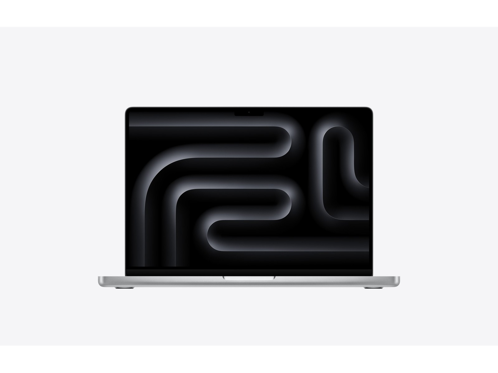
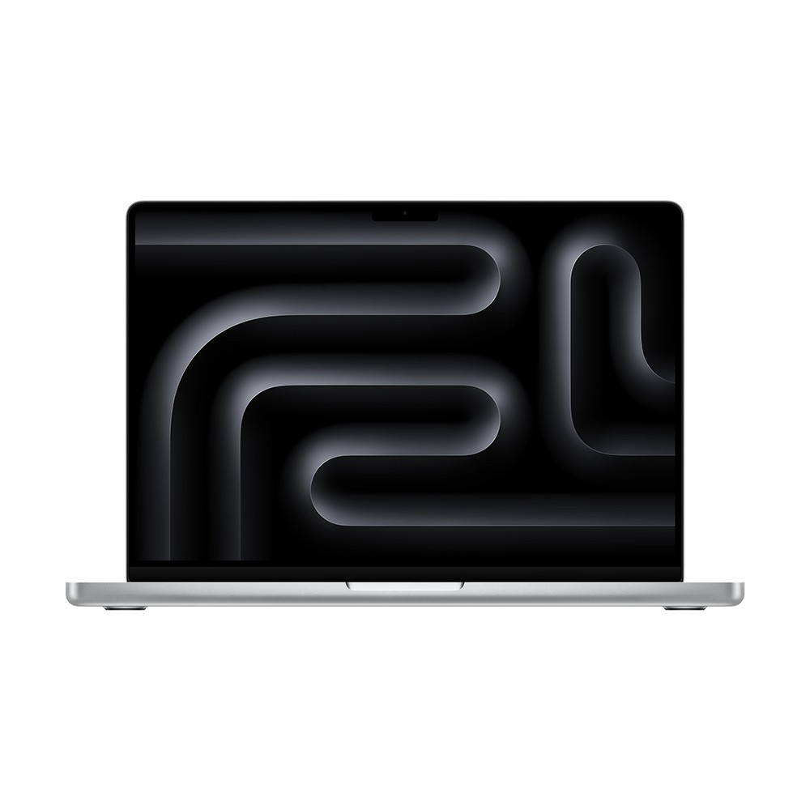
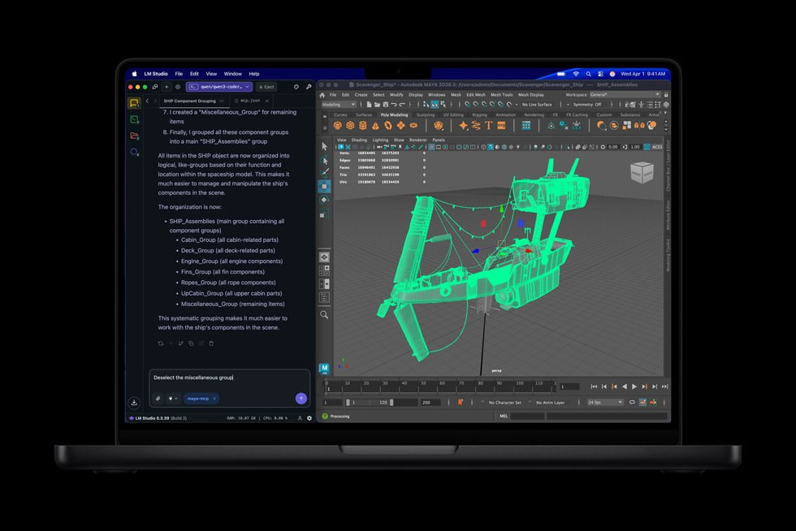
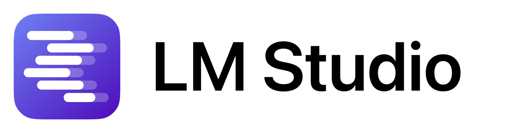
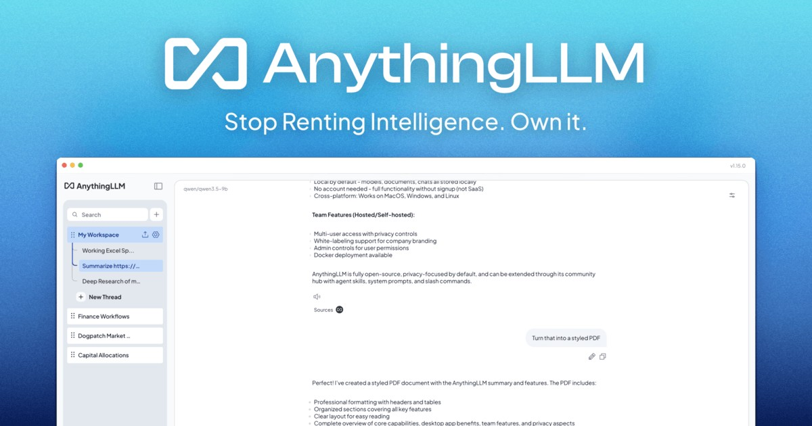
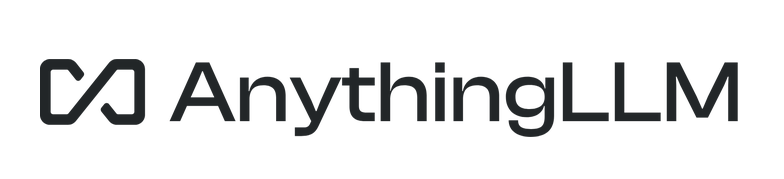

💻 14-inch MacBook Pro (M5 Max)
Aung’s 14-inch MacBook Pro in Silver, configured with the M5 Max chip (18-core CPU, 40-core GPU, 16-core Neural Engine), 128GB of unified memory, 2TB of storage, the standard Liquid Retina XDR display and a 96W power adapter, at A$10,299.00. This page records that exact configuration, then explains — from official docs, not from unpublished speed tests — how LM Studio and AnythingLLM can run local large language models on this machine, and how Grok Bot sits alongside them.
These are Aung’s configured specs. The table below is this machine as configured, not a generic 14-inch base model. The chip, memory, storage, finish, display type, adapter, keyboard and price were supplied with the request and match the Apple Australia configure-to-order page for this combination, opened on 18 Nov 2026, which listed A$10,299.00. Extra facts such as memory bandwidth, display resolution, port speeds, battery size and chassis weight come from Apple’s tech specs and the 3 Mar 2026 newsroom announcement. Numbers Apple does not publish, and tokens-per-second figures I have not measured, are not invented here. [1] [2]
Pictures
Product photos and app artwork are stored in this page’s img/ folder (no hotlinking). Each caption states the source and how the file may be used. Official Apple, LM Studio and AnythingLLM images are copyright of their owners and are used here only to identify the products.






frontend/src/media/logo/anything-llm-dark.png, retrieved 18 Nov 2026). Copyright Mintplex Labs; used here to identify the app, placed on a white background. Not a freely licensed Commons file.This machine, as configured
Rows marked as Aung’s configuration are the options on this laptop. The other rows are general published specs for 14-inch MacBook Pro with M5 Max, which this configuration inherits.
| Item | This machine | Notes / source |
|---|---|---|
| Model | 14-inch MacBook Pro, Silver | Aung’s configuration. Finish options are Space Black and Silver. [1] [2] |
| Configured price | A$10,299.00 | Aung’s configured price; also the price shown on the Apple Australia page for this exact combination on 18 Nov 2026 (or A$858.25/month for 12 months at 0% p.a.). [1] |
| Chip | Apple M5 Max, 18-core CPU, 40-core GPU, 16-core Neural Engine | Aung’s configuration. The 18-core CPU is 6 super cores and 12 performance cores. The 40-core GPU SKU is the one that supports 128GB and is published with 614GB/s memory bandwidth (the 32-core M5 Max SKU is 460GB/s). Each GPU core includes a Neural Accelerator; hardware-accelerated ray tracing is listed. [2] [3] |
| Apple Intelligence and Siri AI* | Included on this configuration | Shown on the Apple Australia summary for this machine. Apple documents that Apple Intelligence and Siri AI feature and language availability can vary by region. [1] [3] |
| Unified memory | 128GB | Aung’s configuration. 128GB is published only for M5 Max with the 40-core GPU. [2] |
| Storage | 2TB SSD | Aung’s configuration. 2TB is the starting SSD for M5 Max; 4TB and 8TB are optional. [2] |
| Display | Standard 14.2-inch Liquid Retina XDR (not nano-texture) | Aung’s configuration. 3024-by-1964 at 254 ppi; ProMotion up to 120Hz; XDR brightness 1000 nits sustained full-screen and 1600 nits peak (HDR content only); SDR up to 1000 nits outdoors. Nano-texture is a separate option (A$225 extra on the AU store when checked on 18 Nov 2026). [2] [1] |
| Power adapter | 96W USB-C Power Adapter, USB-C to MagSafe 3 Cable (2 m) | Aung’s configuration, and the adapter Apple lists as included with M5 Max. Fast-charge capable with a 96W or higher USB PD source. [1] [2] |
| Keyboard | US English backlit Magic Keyboard with Touch ID | Aung’s configuration. The backlit Magic Keyboard includes Touch ID and a Force Touch trackpad; ANSI layouts have 78 keys. [1] [2] |
| Ports | Three Thunderbolt 5 ports, MagSafe 3, 3.5 mm headphone jack, HDMI, SDXC card slot | Aung’s configuration, matching the published I/O. Thunderbolt 5 (USB-C) is listed with charging, DisplayPort, Thunderbolt 5 and USB 4 at up to 120Gb/s. [2] |
| Wireless | Wi-Fi 7, Bluetooth 6 | Aung’s configuration. Apple’s N1 wireless chip provides Wi-Fi 7 (802.11be), Bluetooth 6 and Thread. [2] [3] |
| External displays | Support for up to four external displays, plus the built-in display at full native resolution | Aung’s configuration, and the published M5 Max limit (four displays up to 6K at 60Hz or 4K at 144Hz, or two displays up to 8K at 60Hz / 5K at 120Hz / 4K at 240Hz). M5 Pro is limited to three external displays. [2] |
| Battery (published) | 72.4-watt-hour; up to 20 hours video streaming and 13 hours wireless web (M5 Max) | Published M5 Max figures, not a measurement of this unit. [2] |
| Size and weight (published) | 1.55 cm × 31.26 cm × 22.12 cm; 1.62 kg (3.6 pounds) for M5 Max | Published chassis figures for the 14-inch M5 Max. [2] |
| Announced | 3 March 2026 | 14- and 16-inch MacBook Pro with M5 Pro and M5 Max; pre-order from 4 Mar 2026, availability from 11 Mar 2026. [3] |
Local LLMs on this Mac: LM Studio
LM Studio is a desktop app for downloading and running open large language models on your own computer. Its docs describe it as a way to search Hugging Face for models, chat with them, attach documents for offline retrieval-augmented generation (RAG), connect MCP servers, and serve the loaded model on a local OpenAI-compatible (and other) API. It can operate entirely offline once the model files are on disk. [4]
On Apple Silicon Macs, LM Studio supports two inference engines: llama.cpp (GGUF files, also used on Windows and Linux) and Apple’s MLX, which is built for Apple Silicon and can use the GPU and unified memory on this chip. Runtimes are installed or updated in the app with ⌘⇧R, or with lms runtime update mlx / lms runtime update llama.cpp. MLX support has shipped in LM Studio since version 0.3.4; the MLX engine (mlx-engine) is open source. You can load MLX and llama.cpp models side by side. [4] [6] [7]
System requirements list Apple Silicon Macs on macOS 14.0 or newer, with 16GB of memory recommended (and a note to keep models and context modest on 8GB machines). The requirements page still names M1–M4 explicitly; this M5 Max machine is Apple Silicon with far more than 16GB, and Apple’s own M5 Pro / M5 Max announcement named LM Studio as an app in which LLMs run on the new MacBook Pro. This page does not treat that as a formal “M5 certified” statement in the LM Studio docs, and it does not invent tokens/second for this laptop. [5] [3]
To make a loaded model available to other apps, open LM Studio’s Developer tab and turn on the local server, or run lms server start. The usual OpenAI-compatible base URL on the same Mac is http://localhost:1234/v1. [8]
AnythingLLM, using LM Studio as the local backend
AnythingLLM, built by Mintplex Labs, is an all-in-one app for chatting with a local or cloud LLM, storing documents in workspaces, doing RAG (retrieval-augmented generation), and using agents — with a one-click desktop install for macOS, Windows and Linux. The desktop edition is aimed at single-user, on-device use: documents and embeddings can stay on the computer. It has its own built-in local engine, and it can also be pointed at an external provider. [9] [10]
LM Studio is a supported external LLM provider. AnythingLLM’s docs say you install LM Studio separately, start its built-in inference server, then choose LM Studio as the provider in AnythingLLM’s settings. Official examples use the base path http://localhost:1234/v1 and a model name that matches whatever is loaded in LM Studio. You can change the model later in settings (load the new model in LM Studio first). In this setup, LM Studio owns the weights and the GPU/ANE/unified-memory runtime; AnythingLLM owns the workspace, document embedding and the chat/RAG UI. [11] [12]
For documents, AnythingLLM can either attach the full text of a file into the prompt or embed it into a workspace (chunk, vectorise and retrieve only the nearby pieces at question time). Embedding is the RAG path and is what you want for large libraries that would not fit in the model’s context window. [13]
What fits in 128GB of unified memory
On this Mac the 128GB is unified: the CPU, GPU, Neural Engine, macOS and every app share one pool. A model’s weight file is the starting point, not the whole runtime budget. A useful first estimate is:
weight memory ≈ parameter count × (bits per weight ÷ 8)
llama.cpp publishes measured bits-per-weight for its GGUF quant types, and example file sizes for Llama 3.1. Those are the figures used below. Q4_K_M is about 4.8944 bits/weight, Q5_K_M about 5.7036, Q6_K about 6.5633, Q8_0 about 8.5008, and F16 is 16 bits (2 bytes) per weight. [14]
On top of the weights you still need:
- the KV cache (key/value cache) for the conversation context, which grows with context length and with the model’s depth — a long context can add many gigabytes;
- macOS, LM Studio or AnythingLLM, and whatever else is open;
- any second model (for example an embedder, or a draft model for speculative decoding) if you load more than one at once.
So a weight file that already uses most of 128GB will not leave enough room to be useful. The “fits?” column is about whether the weights leave practical headroom on a 128GB unified-memory Mac, not a guarantee, and not a speed rating. Rows labelled official use llama.cpp’s published file sizes. Rows labelled estimated scale those official 70B Q4_K_M figures by the published bits-per-weight ratios, or by parameter count (120B = 70B × 120/70). Actual GGUF or MLX files vary with architecture (dense vs MoE), vocabulary and how the quant was built. MLX 4-bit and 8-bit files follow the same bytes-per-parameter idea, but this table does not invent MLX file sizes.
| Example | Format | Weight-file size | On 128GB unified memory? |
|---|---|---|---|
| Llama 3.1 8B | Q4_K_M GGUF | 4.9 GB official | Yes — plenty of headroom for context and the OS. |
| Llama 3.1 70B | Q4_K_M GGUF | 43.1 GB official | Yes — a comfortable default; room left for a longish context. |
| 70B-class (scaled from the 70B official Q4_K_M size) | Q8_0 GGUF | about 75 GB estimated | Yes, if you leave tens of gigabytes for macOS and the KV cache; keep an eye on context length. |
| 70B-class | F16 / BF16 | about 141 GB estimated | No — the weights alone exceed 128GB (llama.cpp’s published 70B “original” size is 280.9 GB, which is 32-bit). |
| 120B-class (linear scale from 70B) | Q4_K_M GGUF | about 74 GB estimated | Likely yes for the weights, with similar caution as 70B Q8 about context and other apps. |
| 120B-class (linear scale from 70B) | Q8_0 GGUF | about 128 GB estimated | Impractical — the weights already sit at the 128GB ceiling before the OS or KV cache. |
| Llama 3.1 405B | Q4_K_M GGUF | 249.1 GB official | No — the weight file is already nearly twice 128GB. |
Worked example for the official 70B Q4_K_M row: 70×109 parameters × 4.8944 bits ÷ 8 ≈ 42.8×109 bytes, which is consistent with llama.cpp’s published 43.1 GB (the published file is the figure to trust; “70B” is a nominal count and k-quants are not uniform across every tensor). I have not measured tokens/second, time-to-first-token, or thermal limits on this MacBook Pro, and Apple’s “up to 4× faster LLM prompt processing” claim versus M4 Pro / M4 Max is Apple’s published comparison with its own footnotes — not a result from this machine. [14] [3]
A short setup walkthrough
- Install LM Studio for macOS from lmstudio.ai. macOS 14 or newer is required. [4] [5]
- Install the runtimes with ⌘⇧R. On this Apple Silicon Mac, install (or update) both the MLX runtime and the llama.cpp runtime if you want to try both formats. [4]
- Download a model in LM Studio’s Hugging Face search. A 70B-class Q4 or Q5 build, or an MLX 4-bit of similar size, is a sensible first large model on 128GB; an 8B model is a good smoke test. Prefer a quant whose weight file leaves tens of gigabytes free (see the table above). Then load it and chat in LM Studio.
- Start the local server from the Developer tab, or with
lms server start, so other apps can callhttp://localhost:1234/v1. [8] - Install AnythingLLM Desktop from the AnythingLLM site. In settings, set the LLM provider to LM Studio, use base path
http://localhost:1234/v1, and pick the model that is loaded in LM Studio. [10] [11] [12] - Create a workspace, upload the documents you want to keep local, and embed them if the library is large. Chat in AnythingLLM while LM Studio keeps serving the model. [13]
How Grok Bot fits alongside
Grok Bot is a desktop assistant with its own cloud computer. It is not a local model runner, and this page does not claim that Grok Bot loads LM Studio or AnythingLLM models, or that it serves weights from this MacBook Pro’s unified memory.
A practical split on this machine is:
On the Mac, locally
- LM Studio downloads, loads and serves open models (MLX or GGUF) in unified memory, including a local API on localhost.
- AnythingLLM provides workspaces, document RAG and a chat UI, talking to that local server when you point it at LM Studio.
- That path is the one to use when the work should stay private or offline — for example drafts, internal notes or document collections that you do not want sent to a hosted model.
With Grok Bot
- Grok Bot is the assistant for work that needs its cloud computer and connected tools: web research, email, publishing pages on this site, and scheduled routines.
- It sits alongside the local stack rather than replacing it. You can research or publish with Grok Bot, and still chat with a local model about files that never leave the Mac.
- Nothing on this page is a description of Grok Bot’s internals, billing, or which models it uses in the cloud.
What is uncertain or easy to misread. (1) A$10,299.00 is the configured price for this exact standard-display combination as shown on Apple Australia on 18 Nov 2026; store prices and delivery estimates change, and nano-texture was listed as a A$225 option that this machine does not use. (2) “Standard display” means the default Liquid Retina XDR glass, not the later PROLED XDR product line and not nano-texture. (3) LM Studio’s requirements page still lists M1–M4 by name; compatibility here is inferred from Apple Silicon support plus Apple naming LM Studio in the M5 Pro / M5 Max announcement, not from a measured run on this unit. (4) The memory table’s official rows are llama.cpp file sizes; estimated rows are scaled from those figures and will not match every GGUF or MLX repo. (5) I have not published tokens/second, power draw or thermals for this laptop. (6) The newsroom LM Studio photograph shows a Space Black chassis; Aung’s machine is Silver.
Sources
All links were opened on 18 Nov 2026 (Melbourne time). Prefer the original Apple, LM Studio, AnythingLLM or llama.cpp page if a cached copy and the live page ever disagree.
- Apple (AU) store: 14-inch MacBook Pro, Silver, standard display, M5 Max 18-core CPU / 40-core GPU, 128GB, 2TB — configured price A$10,299.00, 96W adapter, US English backlit Magic Keyboard with Touch ID, ports, Wi-Fi 7, Bluetooth 6, and up to four external displays.
- Apple Support: MacBook Pro (14-inch, M5 Pro or M5 Max) — Tech Specs — chip options, 614GB/s bandwidth on the 40-core M5 Max, memory and storage matrices, Liquid Retina XDR figures, 96W adapter, Thunderbolt 5 at up to 120Gb/s, N1 / Wi-Fi 7 / Bluetooth 6, M5 Max four-display support, battery, size and weight.
- Apple Newsroom, 3 March 2026: Apple introduces MacBook Pro with all-new M5 Pro and M5 Max — announcement date, Silver and Space Black, N1 wireless, up to 128GB and 614GB/s on M5 Max, the sentence that LLMs run in apps such as LM Studio, and Apple’s own “up to 4×” LLM prompt-processing comparison (with footnotes).
- LM Studio Docs: Welcome to LM Studio Docs — what the app does, llama.cpp and MLX runtimes, offline use, MCP, and local APIs.
- LM Studio Docs: System Requirements — Apple Silicon, macOS 14.0+, 16GB recommended.
- LM Studio blog: LM Studio 0.3.4 ships with Apple MLX — MLX in the app, Hugging Face MLX downloads, local OpenAI-like server, mixing llama.cpp and MLX models.
- GitHub: lmstudio-ai/mlx-engine — open-source MLX engine used by LM Studio (mlx-lm, mlx-vlm, Outlines).
- LM Studio Docs: LM Studio as a Local LLM API Server — Developer tab “Start server”,
lms server start, OpenAI-compatible and other endpoints. - AnythingLLM Docs: What is AnythingLLM? — product description (RAG, agents, no-code app; Mintplex Labs).
- AnythingLLM Docs: Desktop Installation Overview — desktop vs Docker, on-device single-user use on macOS.
- AnythingLLM Docs: LMStudio LLM — LM Studio as a provider; start the LM Studio inference server, then connect.
- AnythingLLM Docs: Deep Links — official LM Studio example using
http://localhost:1234/v1. - AnythingLLM Docs: Using Documents in AnythingLLM — attached documents vs embedded RAG in a workspace.
- llama.cpp tools/quantize README — official GGUF bits/weight values and Llama 3.1 example file sizes (8B / 70B / 405B, Q4_K_M and original).
- LM Studio brand guidelines — official logo artwork used on this page.
- AnythingLLM website and the AnythingLLM GitHub repository — official UI image and wordmark used on this page.